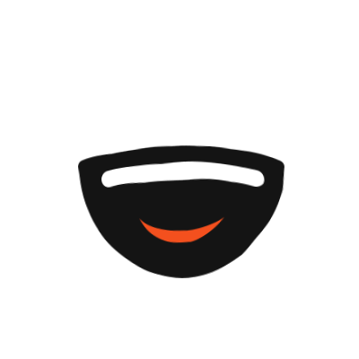
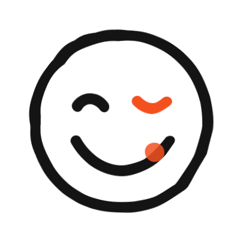
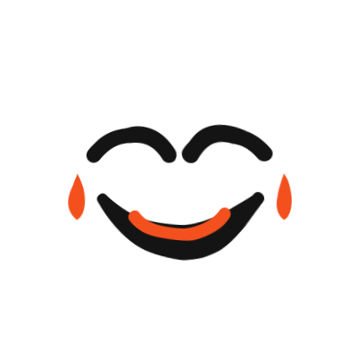
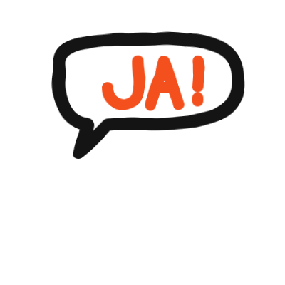
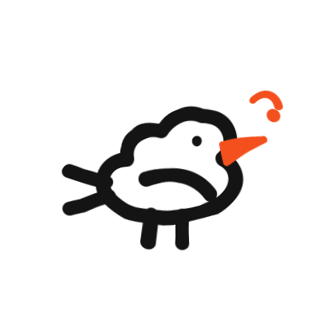
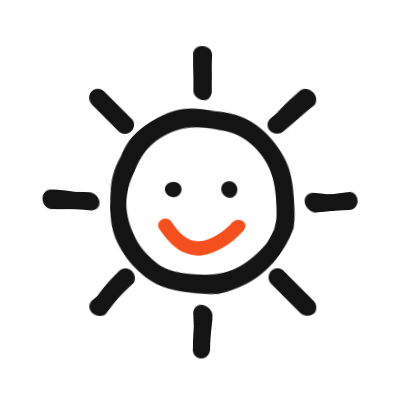
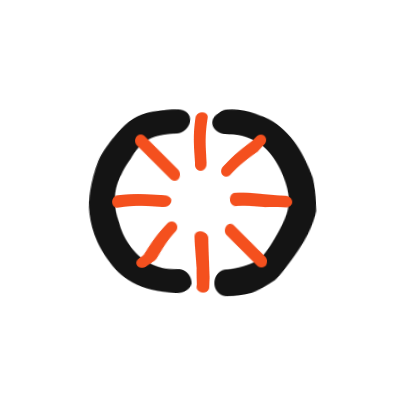
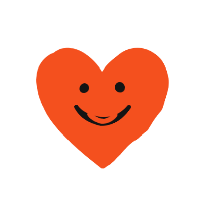
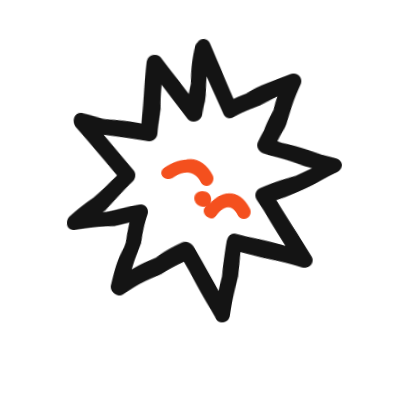
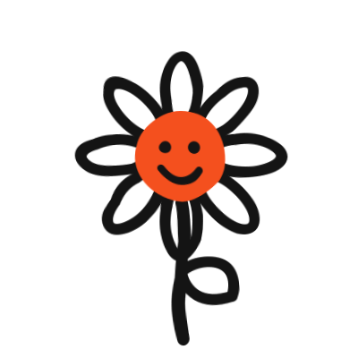

07 · Descorche — la alegría sale disparada


09 · Cita — la risa citada


10 · Cinética — la sonrisa vibrando


11 · Tilde — el wordmark que sonríe


13 · Sello — la comunidad en círculo


A mano alzada — 10 símbolos de trazo suelto
Duotono tinta + bermellón, dibujados con temblor de pincel (SVG + filtro roughen). La risa en diez formas.









